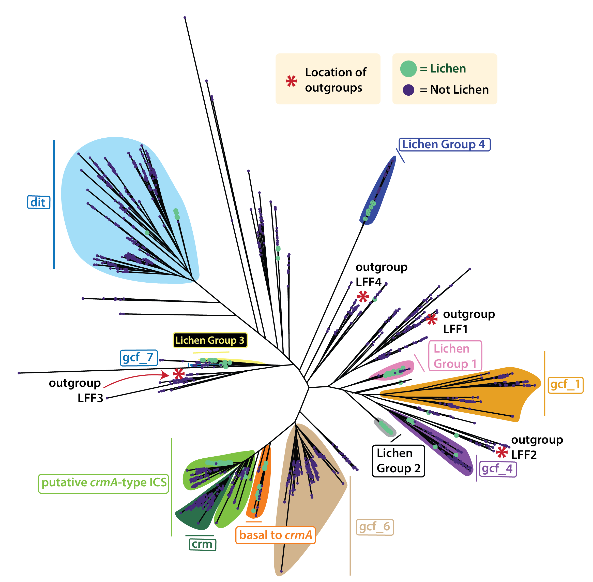

Nickles G.R., et al.

Figure 1. (a) Unrooted phylogeny of fungal isocyanide synthases' (ICS) amino acid sequences. Clades corresponding to gene cluster families (GCFs) previously annotated by Nickles et al. (2003) are indicated on the tree. Six previously unreported, lichen-associated ICS clades investigated in this study are highlighted: "Lichen Group 1" (LG1; pink), "Lichen Group 2" (LG2; grey), "Lichen Group 3" (LG3; yellow), "Lichen Group 4" (LG4; dark blue) and "putative/basal crmA-type ICS" (indicated in lime green and orange). Tips representing ICS proteins derived from lichen and non-lichen genomes are colored green and purple, respectively.
The products of isocyanide synthase (ICS) biosynthetic gene clusters (BGCs) have been implicated in microbial interactions, pathogenesis, and metal homeostasis. While several ICS BGCs have been described as mediating metal-associated ecologies, the evolutionary history of this recently described class of secondary metabolite is unexplored among Lecanoromycetes, a clade comprised predominantly of symbiotic, lichen-forming, fungi (LFF), known to thrive in both metal-contaminated and scarce environments. Analyzing nearly 4,000 fungal genomes, including 90 Lecanoromycetes, we identified a significant 3-fold enrichment of ICS encoding genes within lichenized fungi compared to non-lichenized counterparts. This expansion includes six distinct clades enriched in LFF. Evolutionary reconstruction uncovered a widespread "split" variant of the copper-responsive (crmA) pathway, where the ICS and NRPS-like components are encoded on separate genes, contrasting to the canonical "fused" crmA megasynthase. Metabolic characterization and genetic deletions in Fusarium graminearum confirmed that this split architecture is functionally equivalent to the fused form. Further, our chemical analysis suggests the first evidence of a potential leucine derived isocyanide metabolite. Phylogenetic reconstruction indicates the fused crmA arose from a split ancestor, whose NRPS-like component evolved from a canonical thioester reductase architecture likely via domain replacement. Redefinition of the crmA pathway to include the "split" ICS/NRPS-like variant reveals that crmA is the most prevalent ICS in the fungal kingdom. Our work demonstrates how exploring understudied fungal lineages can define new specialized metabolism lineages and reshape our understanding of the evolution of biosynthetic pathways across the fungal kingdom.